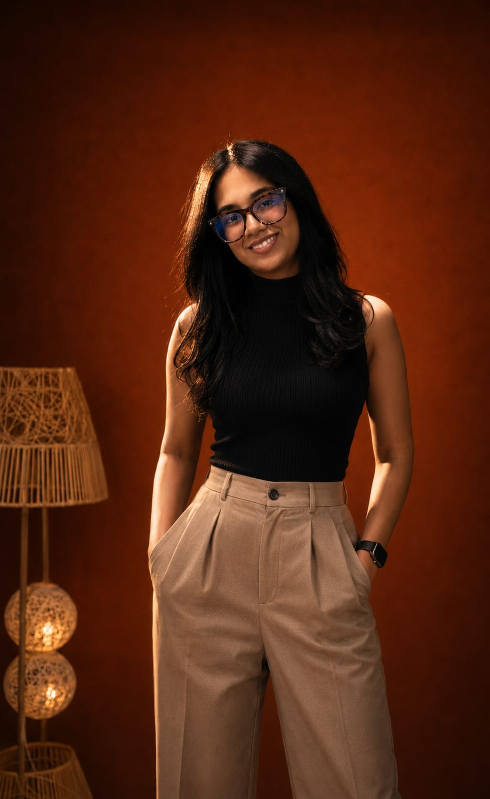

Hello, world
"Every engineer has two problems: the one they’re solving and the three they created while solving it."
— A belief I build by
B.Tech in · Computer Science and Engineering focused on full-stack systems, blockchain technologies and AI/ML driven solutions.
Get to know me

Hey! I’m Omanshi — a B.Tech in Computer Science and Engineering student, part-time builder, full-time overthinker and someone who finds an unreasonable amount of joy in things working exactly as intended (which, as it turns out, is rare). I work across full-stack development, AI/ML and Blockchain Technologies, a combination that sounds impressive until you realise it mostly involves me arguing with code that was technically correct but emotionally devastating.
I like building things end-to-end—interfaces that are clean enough to not offend the eye and systems underneath that quietly do their job without staging a rebellion. My interests sit at the slightly chaotic intersection of intelligent systems and real-world usability, where I attempt to make machines a little smarter and technology a little more human. Whether it’s experimenting with decentralised systems or training models that may or may not cooperate, I’m usually chasing ideas that feel both ambitious and annoyingly doable.
Outside of building, I spend my time refining ideas, rethinking solutions I was previously convinced were perfect and occasionally fixing bugs that were, quite predictably, my own creation. I believe good engineering is not just about making things work, but making them make sense: clean, thoughtful and just a little bit elegant.
Also, I debug best with music playing in the background and a beverage I fully intend to drink while it’s hot. I never do.
My experience
A snapshot of where I've been, what I've built and the skills I've picked up (and sometimes dropped) along the way.
What I've built
Things I made, broke, rebuilt and eventually shipped. Click any card to visit the repo.
Proud moments
A gallery of meaningful moments: events, competitions and things I showed up for.
My thoughts
Essays, ideas, and occasional existential musings about tech, healthcare, and life. Click to read in full.
My path
Every milestone that shaped who I am: the schools, the breakthroughs, the quiet pivots and the moments that mattered.